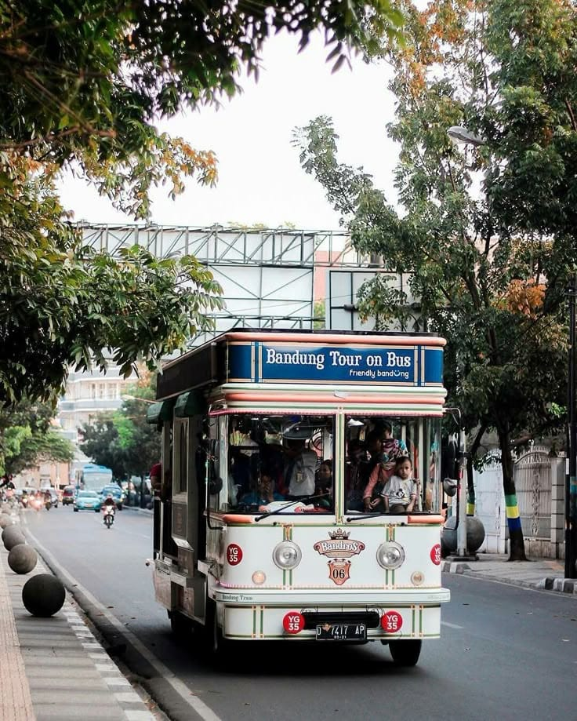
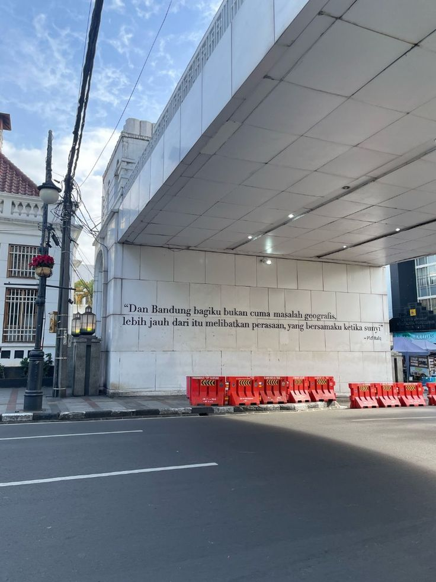
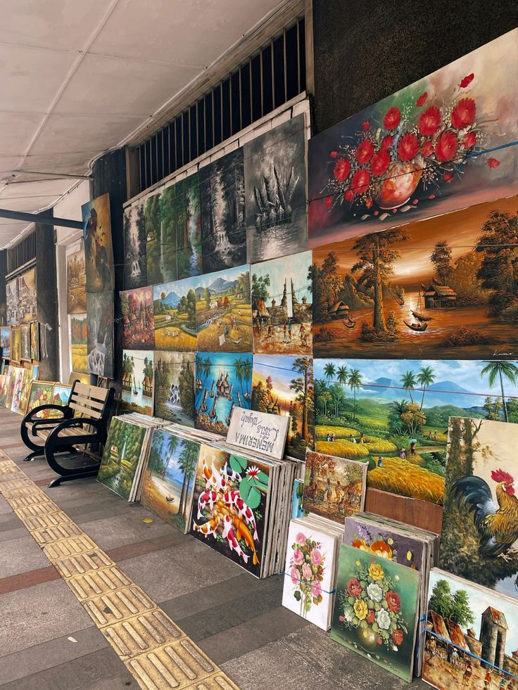

Explore Kota Kembang adalah platform informasi wisata yang menghadirkan berbagai destinasi menarik di Kota Bandung. Website ini bertujuan membantu wisatawan menemukan pengalaman terbaik saat menjelajahi Kota Kembang.

Bandung dikenal sebagai Kota Kembang yang memiliki berbagai daya tarik wisata, mulai dari keindahan alam pegunungan, warisan budaya yang kaya, hingga destinasi modern yang menarik bagi wisatawan. Dengan udara yang sejuk dan suasana kota yang kreatif, Bandung menjadi salah satu tujuan wisata favorit di Indonesia.
Melalui Explore Kota Kembang, kami menghadirkan informasi lengkap mengenai berbagai kategori wisata seperti wisata alam, wisata budaya dan edukasi, serta wisata buatan manusia yang dapat dinikmati oleh semua kalangan.
Website ini dirancang untuk memudahkan pengunjung dalam menjelajahi berbagai destinasi wisata di Kota Bandung. Setiap kategori wisata disusun secara terstruktur sehingga pengguna dapat menemukan tempat wisata sesuai minat mereka.
Pengunjung dapat menemukan informasi mengenai berbagai tempat menarik seperti Taman Hutan Raya, Babakan Siliwangi, museum bersejarah, hingga destinasi hiburan modern seperti Lembang Park & Zoo dan Stadion Gelora Bandung Lautan Api.


Explore Kota Kembang hadir untuk menjadi sumber informasi wisata yang sederhana, informatif, dan mudah diakses oleh siapa saja. Kami ingin membantu wisatawan mengenal lebih dekat keindahan Kota Bandung serta mendorong masyarakat untuk menikmati berbagai destinasi wisata yang ada di kota ini.
Dengan menggabungkan informasi destinasi, kategori wisata, serta tampilan website yang modern, Explore Kota Kembang diharapkan dapat memberikan pengalaman digital yang menyenangkan bagi para pengunjung.